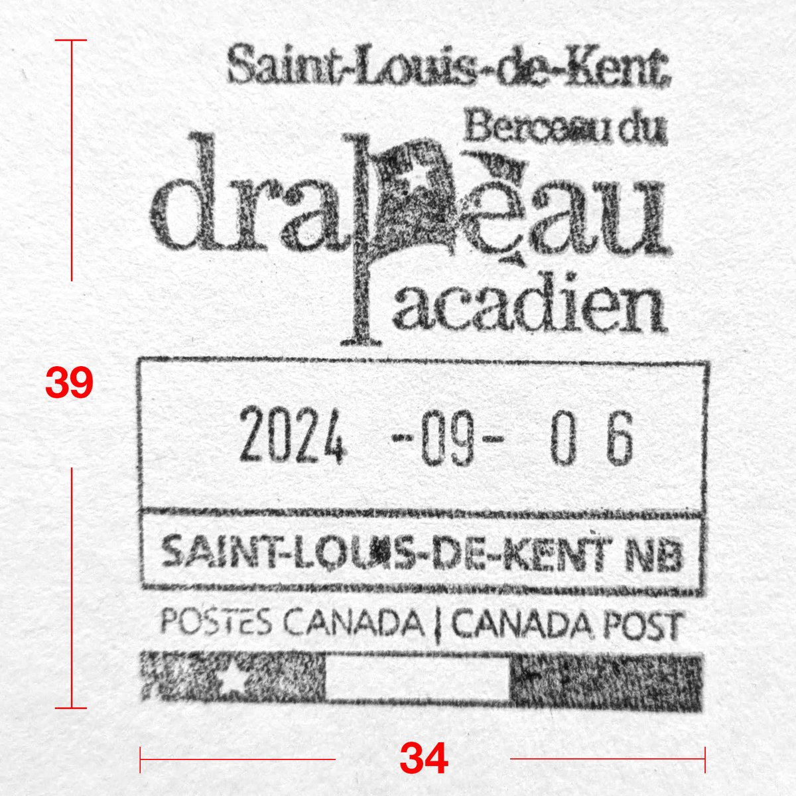

St-Louis-de-Kent Main PO pictorial cancel
Berceau du drapeau acadien
- Status
- Expired
- Run dates
- 2017-01-01 to 2025-12-31
- Design
- "Berceau du drapeau acadien"; Acadian flag
- Ink colour
- Black
- Designer
- Unknown
- Post office
- St-Louis-de-Kent Main PO
11 Rue Beauséjour
St-Louis-de-Kent, NB
E4X 2Z0 - Subjects
- flag, Acadie, Francophonie, culture, history
This cancel is retired, so the post office can no longer apply it. Covers with it turn up from dealers and other collectors.
 Shediac Main POLe Capitale Mondiale du Homard / The Lobster Capital of the World
Shediac Main POLe Capitale Mondiale du Homard / The Lobster Capital of the World Apohaqui STN MainThe joining of two rivers
Apohaqui STN MainThe joining of two rivers St Martins STN MainShip in the ocean
St Martins STN MainShip in the ocean Juniper POTrain, fish, trees
Juniper POTrain, fish, trees